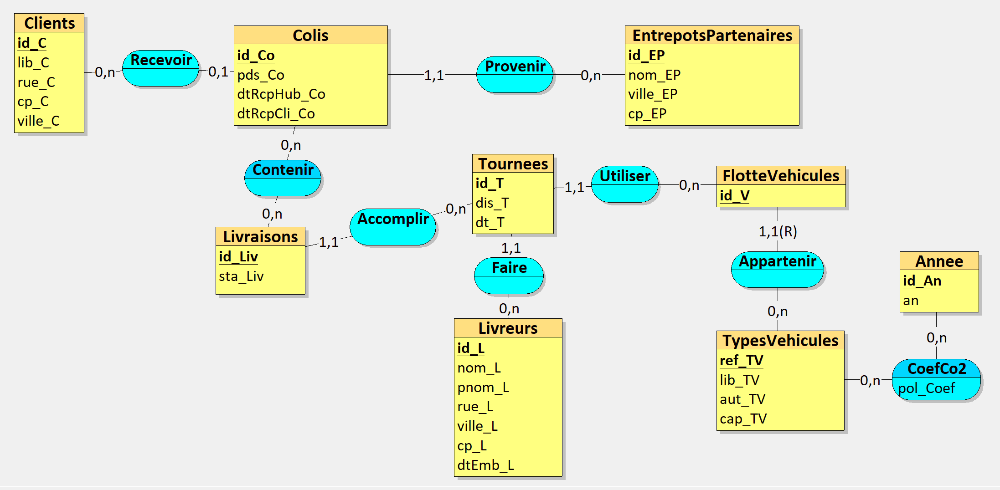
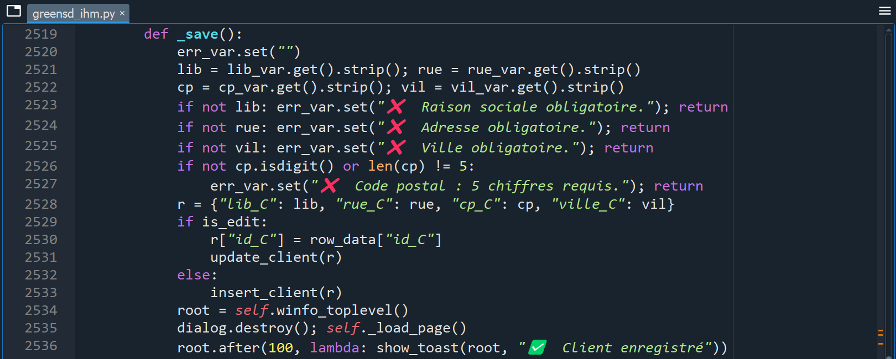
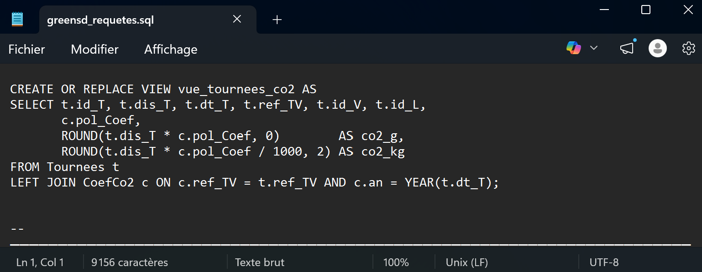
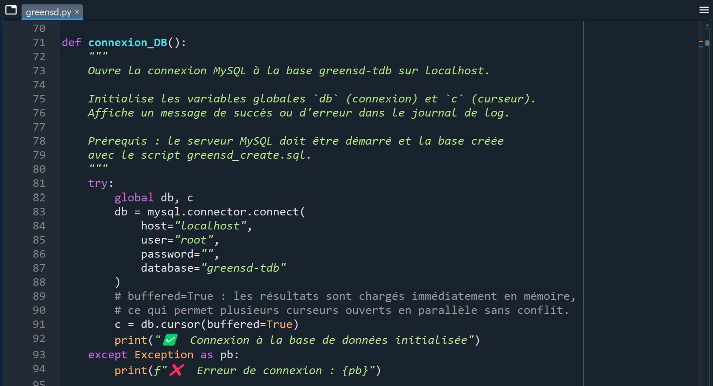
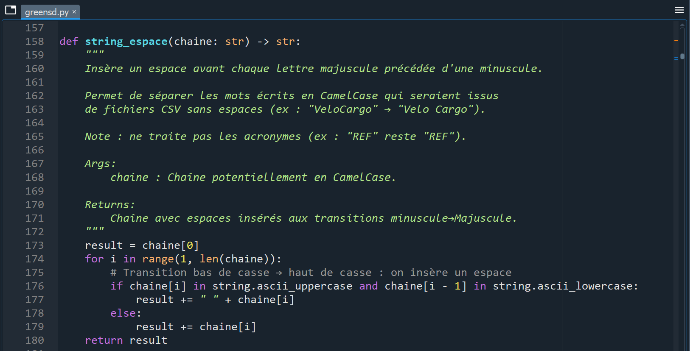
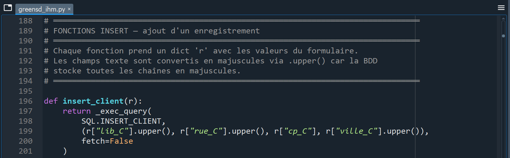
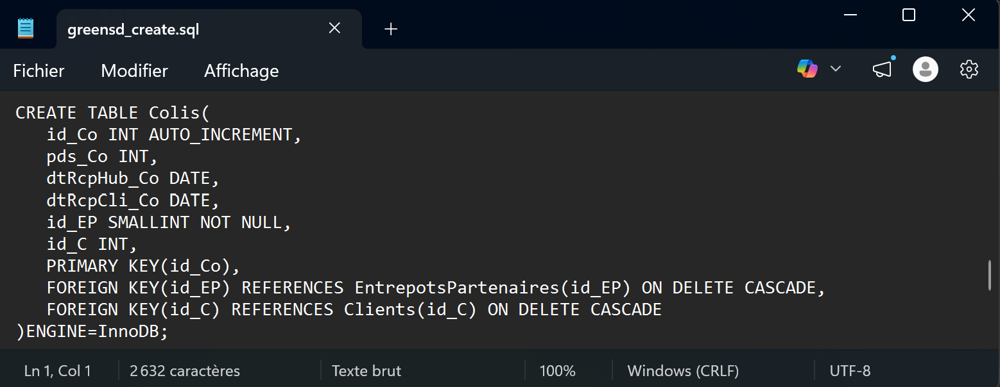

Logistique bas-carbone – MCD, SQL, Python, CustomTkinter
Conception et développement d’une application complète de gestion logistique bas-carbone pour une entreprise fictive de transport écologique. Du modèle conceptuel de données à l’interface graphique fonctionnelle, en passant par l’automatisation de l’import CSV et les indicateurs décisionnels. ~200 heures de travail cumulées, 8 200 lignes de code, 28 pages de documentation.
Année
2025 – 2026 (S2)
Date de rendu
Avril 2026
Cadre
Binôme avec Louis · ~200h cumulées
Livrables
Application Python + base MySQL + cahier des charges 28p + vidéo 27min
Outils
SAÉ
Conception et implémentation d’une base de données
GreenSD est une entreprise fictive de transport spécialisée dans la livraison bas-carbone en zone urbaine. Elle s’appuie sur une flotte de véhicules électriques et de solutions de mobilité douce (vélos-cargo, triporteurs, trottinettes) pour assurer le transport de marchandises tout en minimisant son empreinte carbone.
L’objectif du projet était de concevoir et développer une application complète de gestion logistique : depuis la modélisation conceptuelle des données (MCD sous Looping) jusqu’à l’implémentation d’une interface graphique fonctionnelle (CustomTkinter), en passant par la création de la base de données relationnelle (MySQL), l’automatisation de l’import de fichiers CSV et la conception de requêtes SQL pertinentes pour un décideur.
Travail réalisé en binôme avec Louis. Nous estimons la totalité de notre travail à environ 200 heures cumulées – c’est de loin la SAÉ sur laquelle nous avons le plus investi cette année.
Analyse du cahier des charges et des 5 fichiers CSV non structurés avec de nombreuses incohérences (doublons de noms, formats hétérogènes, CamelCase). Modélisation sous Looping : 9 entités, 7 associations. Nous avons vu les choses en grand, comme pour un contexte métier réel, bien au-delà des données des CSV. Le MCD a été modifié de nombreuses fois au fil du projet.
Génération du MLD, puis création du script greensd_create.sql : 10 tables avec le moteur InnoDB, clés étrangères, contraintes ON DELETE CASCADE. Rédaction d’un script d’insertion avec un jeu de données personnel cohérent couvrant tous les cas du MCD.
Développement du script greensd.py (~3 100 lignes) : chargement, nettoyage et insertion des données CSV dans MySQL. Fonctions de nettoyage sur mesure (CamelCase, accents Unicode, extraction d’adresses). Algorithme de validation en 3 étapes avec dialogs interactifs pour corriger chaque anomalie.
Répartition des tâches selon nos compétences respectives : je me suis chargée du script de traitement et d’import CSV, Louis a conçu et développé l’interface graphique. Points réguliers pour garder une vision d’ensemble cohérente.
Application greensd_ihm.py (~5 100 lignes) organisée en 5 domaines : Logistique, Acteurs, Véhicules, Impact CO₂ et Outils. Chaque module offre un CRUD complet avec pagination SQL, barre de recherche, filtrage par chips et gestion des erreurs. Tableau de bord avec 4 KPI et 2 graphiques Matplotlib intégrés. Maquette initiale réalisée sous Publisher.
10 requêtes SQL conçues pour un décideur (GROUP BY, HAVING, différence algébrique, INSERT/UPDATE/DELETE, vue réutilisée). Cahier des charges de 28 pages documentant l’intégralité du projet.
Vidéo complète de 27 minutes couvrant l’ensemble des fonctionnalités. Le montage a représenté environ 4 à 5 heures de travail.








| greensd.loo | Modèle Conceptuel de Données (Looping) |
| greensd_create.sql | Script SQL de création des 10 tables |
| greensd_insert.sql | Script SQL d’insertion du jeu de données |
| greensd.py | Automatisation – import et nettoyage CSV (~3 100 lignes) |
| greensd_requetes.sql | 10 requêtes SQL pour un décideur |
| greensd_final.sql | Export complet de la base MySQL |
| greensd_ihm.py | Interface graphique CustomTkinter (~5 100 lignes) |
| requetes_sql.py | Module centralisant les requêtes (~730 lignes) |
| Cahier des charges | Documentation complète (28 pages) |
| Vidéo YouTube | Démonstration et tests (27 minutes) |
Apprentissages critiques
Ressources mobilisées
Compétences techniques
La principale difficulté technique a été la gestion des incohérences dans les fichiers CSV : doublons de noms avec des graphies différentes (« Entrepot Nord » / « Entrepôt nord »), formats de poids hétérogènes (« 23kg » vs « 23 »), noms en CamelCase. Cela a nécessité la conception d’un algorithme de validation en trois étapes avec des dialogs interactifs.
L’intégration des graphiques Matplotlib dans une fenêtre CustomTkinter a demandé des recherches techniques approfondies (backend TkAgg, rafraîchissement des canvas). Un défi supplémentaire pour obtenir des graphiques dynamiques mis à jour en temps réel.
La charge de travail considérable (~200h cumulées) et le manque d’expérience sur des projets de cette envergure ont entraîné des retours en arrière fréquents, notamment sur le MCD modifié de nombreuses fois. Le montage vidéo a également représenté un investissement important (4-5h pour 27 minutes).
Concevoir un outil d’aide à la décision impliquait de réfléchir bien au-delà de la technique : quels indicateurs sont pertinents pour un décideur ? Comment présenter les émissions CO₂ de manière exploitable ? Comment rendre l’interface intuitive pour un non-technicien ?
Cette SAÉ m’a permis de développer des compétences approfondies en conception de bases de données relationnelles (MCD/MLD, normalisation, contraintes d’intégrité), en programmation SQL avancée (vues, GROUP BY HAVING, sous-requêtes, jointures multiples), en développement Python orienté données (nettoyage CSV avec Pandas, connexion MySQL, automatisation), en conception d’interfaces graphiques (CustomTkinter, intégration Matplotlib, pagination) et en rédaction de documentation technique (cahier des charges de 28 pages).
Notre force a véritablement été notre complémentarité et notre communication. Nous avions la même méthode de travail et régulièrement nous faisions le point pour énumérer ce qui restait à faire. J’ai appris l’importance d’une répartition claire des tâches basée sur les compétences de chacun, la rigueur dans la gestion d’un projet de grande envergure, et la capacité à se remettre en question quand l’architecture nécessite des modifications.
Avec le recul, j’aurais consacré encore plus de temps à la phase de modélisation initiale du MCD avant de commencer le développement, afin de réduire les retours en arrière. J’aurais également intégré dès le départ un système de gestion des utilisateurs (authentification, niveaux de droits).
Cependant, je suis très fière du résultat obtenu : nous avons fait bien plus que ce qui était demandé par le sujet, car nous avions envie de nous surpasser et de voir jusqu’où nous étions capables d’aller. Cette SAÉ a été ma préférée de l’année – celle qui m’a le plus passionnée et le plus fait progresser.